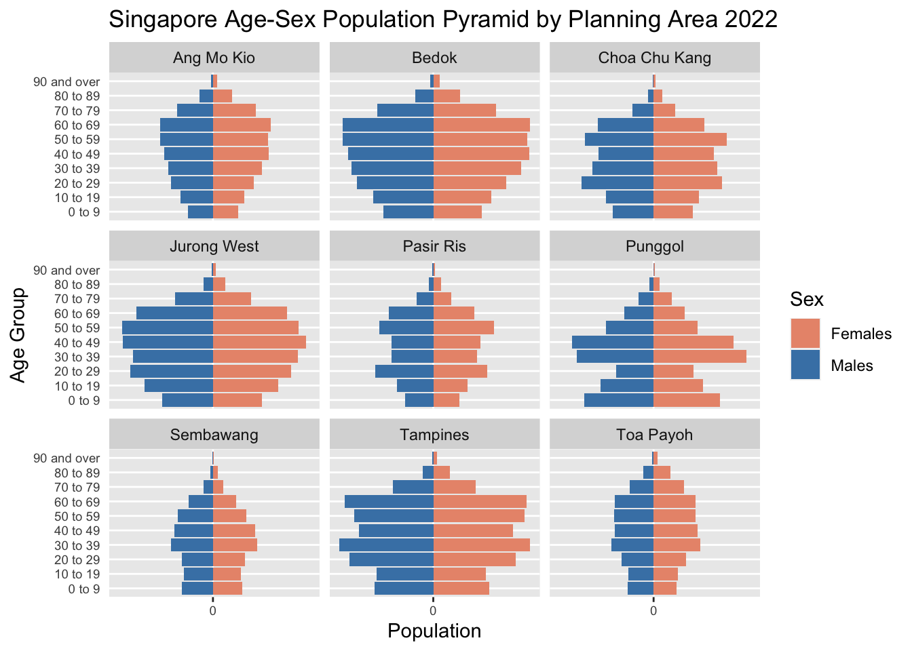

pacman::p_load(tidyverse, patchwork,
ggthemes, hrbrthemes,
ggrepel)Take Home Exercise 2
In this take-home exercise, we will look at one of classmates population pyramid chart and evaluate it in terms of clarity and aesthetics. We will also re-make the original chart design by using ggplot2, ggplot2 extensions and tidyverse packages.
1. R Preparation
Install and launching R packages
The code chunk below uses p_load() of pacman package to check if tidyverse packages are installed. If they are, they will be launched into R.
Importing the data
The code chunk below uses read_csv function to import the dataset: Singapore Residents by Planning Area / Subzone, Age Group, Sex and Type of Dwelling, June 2022, into R and name it ppltn_data for future reference.
ppltn_data <- read_csv("data/respopagesextod2022.csv")Rows: 100928 Columns: 7
── Column specification ────────────────────────────────────────────────────────
Delimiter: ","
chr (5): PA, SZ, AG, Sex, TOD
dbl (2): Pop, Time
ℹ Use `spec()` to retrieve the full column specification for this data.
ℹ Specify the column types or set `show_col_types = FALSE` to quiet this message.2. Critique
The original design is shown as below:

This is a population pyramid trellis chart whereby demographic patterns of 9 selected planning areas in Singapore is well organised into a 3*3 sub-chart format that share the same scale and axis for easy comparison. Male and female population are shown in different color tones, and the age groups are also arranged in descending order for easy visualization
The selected graph includes proper axes and labels; grid lines are included for easy data visualization; A caption in the bottom right corner suggests the source reference; Each planning area is properly labelled in bold in each sub-chart.
However, this chart can be further improved in terms of clarity and aesthetics. The below is the improvement suggestions.
2.1 Clarity
a) Dashboard Title
For easy understanding of the graph, title should serve as a clear summary of the graph. The current dashboard title –“Different demographic patterns are revealed when Singapore population pyramids are grouped by planning areas”, is more like a factual description rather than a summary of the graph presented.
b) Graph Title
As graph title is under the dashboard title, it is unclear to audience in terms of which one to pay attention to. We can combine the dashboard and graph title as there is only one trellis chart in the dashboard.
c) Data Label
In the original chart, only 2 or 3 sets of data are labelled in each population pyramid graph. It is unclear to audience why these sets of data are labelled or emphasized. We can label only the minimum and maximum set for more distinct comparison, or using interactive method to eliminate the label but allow audience to be able to read the details when the cursor is hovering above the interested bar.
2.2 Aesthetics
a) Color Intensity Tone
As population pyramid has shown the population absolute number in terms of vertical bar length, color intensity is not necessary to show population. Hence we can remove the color intensity to make the graph look cleaner.
b) Axes Label
The Y axis label –age group, has been split into 19 categories in total (0 to 4 till 90 and over). It is visually too dense to see clearly. We can further combine the age group into range of 10 years to reduce the number of age groups and make the graph look cleaner.
c) Title
It is more visually pleasant to make graph title center aligned instead of left aligned.
3. Proposed Chart
3.1 Sketch of Proposed Design
3.2 Data Wrangling
Firstly we use filter() function to select the planning areas that the original chart has used.
filtered_PA <- ppltn_data %>%
filter(`PA` =="Ang Mo Kio" |
`PA` =="Bedok" |
`PA`== "Choa Chu Kang" |
`PA`== "Jurong West" |
`PA`== "Pasir Ris" |
`PA`== "Punggol" |
`PA`== "Sembawang" |
`PA`== "Tampines" |
`PA`== "Toa Payoh")Then we will compute Singapore population by planning areas, gender and age using group_by() function.
population <- filtered_PA %>%
group_by(AG, PA,Sex) %>%
summarise('Count'= sum(`Pop`), .groups = 'drop')Secondly, we sort the data based on age group and in ascending order by using mutate() and arrange() function.
order <- c("0_to_4", "5_to_9", "10_to_14", "15_to_19", "20_to_24", "25_to_29", "30_to_34", "35_to_39", "40_to_44", "45_to_49", "50_to_54", "55_to_59", "60_to_64", "65_to_69", "70_to_74", "75_to_79", "80_to_84", "85_to_89", "90_and_over")
sorted_population <- population %>%
mutate(AG = factor(AG, levels = order)) %>%
arrange(AG)For better visibility, we will further group the age group.
combined_AG <- sorted_population %>%
mutate(AgeGroup = dplyr::case_when(AG %in% c("0_to_4", "5_to_9") ~ "0 to 9",
AG %in% c("10_to_14", "15_to_19") ~ "10 to 19",
AG %in% c("20_to_24", "25_to_29") ~ "20 to 29",
AG %in% c("30_to_34", "35_to_39") ~ "30 to 39",
AG %in% c("40_to_44", "45_to_49") ~ "40 to 49",
AG %in% c("50_to_54", "55_to_59") ~ "50 to 59",
AG %in% c("60_to_64", "65_to_69") ~ "60 to 69",
AG %in% c("70_to_74", "75_to_79") ~ "70 to 79",
AG %in% c("80_to_84", "85_to_89") ~ "80 to 89",
AG == "90_and_over" ~ "90 and over"),
AgeGroup = factor(AgeGroup,
level = c("0 to 9","10 to 19","20 to 29","30 to 39","40 to 49","50 to 59","60 to 69","70 to 79","80 to 89", "90 and over")))3.3 Final Design
Firstly, we are going to plot a trellis chart of population pyramid using ggplot() function.
static_plot <- ggplot(combined_AG, aes(x = ifelse(Sex == "Males", yes = -Count, no = Count),
y = AgeGroup, fill = Sex)) +
geom_col() +
facet_wrap(~ PA) +
scale_x_continuous(breaks = seq(-150000, 150000, 50000),
labels = paste0(as.character(c(seq(150, 0, -50), seq(50, 150, 50))))) +
labs (x = "Population", y = "Age Group", title='Singapore Age-Sex Population Pyramid by Planning Area 2022') +
theme(axis.text = element_text(size = 7)) +
theme(axis.ticks.y = element_blank()) +
scale_fill_manual(values = c("Males" = "steelblue", "Females" = "darksalmon"))
static_plot
In order to make the group easy to read and also able to zoom-in for details, we will use plotly to creative interactive plot.
library(plotly)
Attaching package: 'plotly'The following object is masked from 'package:ggplot2':
last_plotThe following object is masked from 'package:stats':
filterThe following object is masked from 'package:graphics':
layoutggplotly(static_plot)4. Conclusion
Take Home Exercise 2 helps me to understand more about the significance of clarity and aesthetics of graphs in terms of enlighten readers in visualization. By evaluating peer’s graph and re-making it with ggplot2 packages in R, I have gained better insights in data visualization and R knowledge.
The above concludes my Take Home Exercise 2. Thank you for reading!